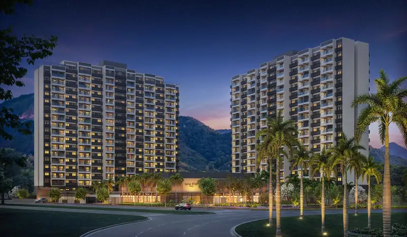
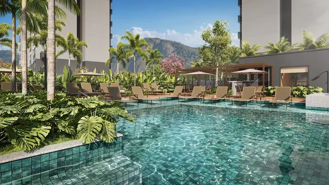
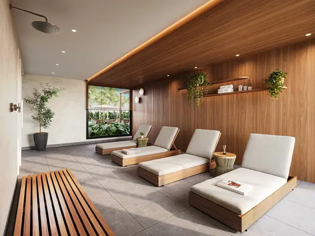
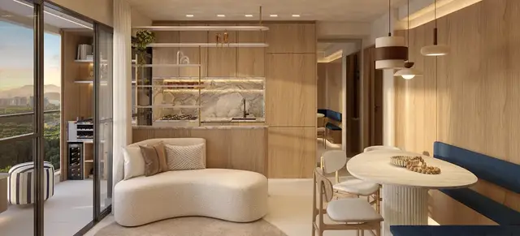
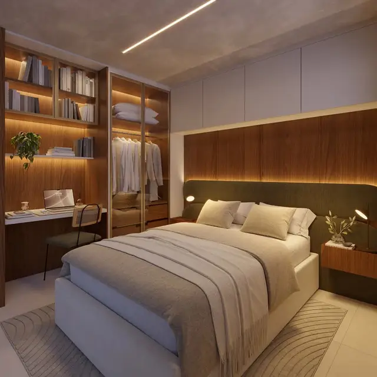
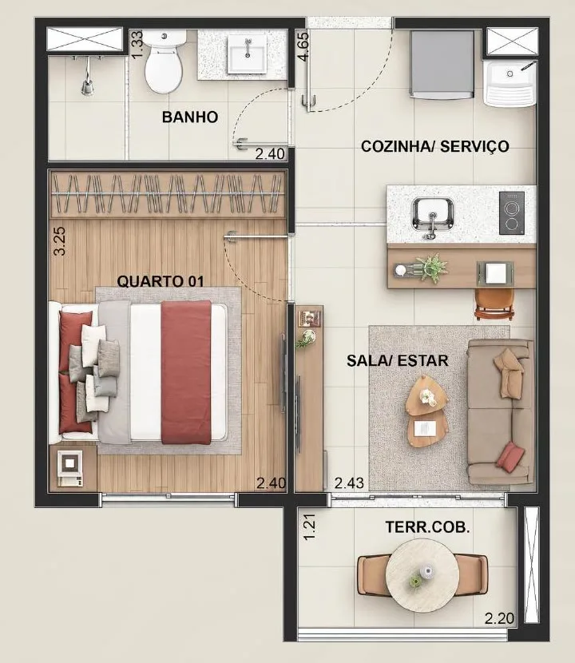
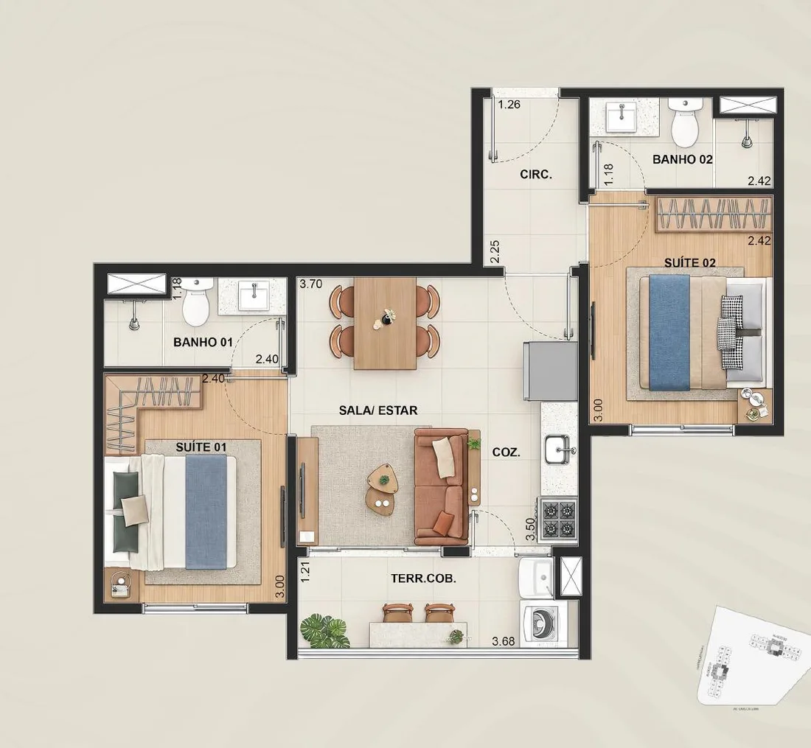

Sala e quarto de 28 m² até garden de 70 m², para investir em short stay ou morar. A 1 minuto do BRT, com rooftop 360° e lazer de resort.
Atendimento direto com a Crisla · CRECI-RJ 96301
*Tabela direta de referência, sujeita a alteração e disponibilidade. Imagens meramente ilustrativas.
Apartamento na planta de 28 a 70 m² em um home resort na Barra Olímpica, pensado para hospedar e investir (short stay) ou para morar, com rooftop de vista 360°, lazer de resort e mall integrado, ao lado do Parque Ilha Pura e perto do Parque Olímpico.
A Barra Olímpica concentra alguns dos maiores polos de eventos do país, com agenda o ano inteiro, e isso movimenta a procura por imóveis de temporada. O Ilha Stay nasce nesse endereço, com estrutura de hotelaria.
Sala e quarto de 28 m² a partir de R$ 299 mil* e entrada a partir de R$ 16 mil*, para começar a investir em um bairro em expansão.
Lavanderia, mini mercado, coworking, spa e fechadura eletrônica nas unidades.
11 lojas dentro do condomínio, com conveniência na porta de casa.
A Lobie, operadora de locação por temporada, é parceira do empreendimento e oferece gestão completa ao proprietário.




Imagens meramente ilustrativas, sujeitas a alteração.

Sala e quarto 28 m² A partir de R$ 299 mil*
Double suíte 47 m² A partir de R$ 550.000**Valores da tabela direta de referência, sujeitos a alteração e disponibilidade. Plantas e metragens podem sofrer alterações.
Prefere falar por telefone? Ligar para a Crisla: (21) 98054-1705
Do sala e quarto à double suíte, são plantas compactas, com varanda, para quem quer morar com praticidade num bairro com mobilidade, escolas, saúde e comércio por perto.
BRT Olof Palme (1 min) · Transolímpica / Linha Amarela (5 min) · Metrô Jardim Oceânico, Linha 4 (10 min).
Shopping Metropolitano (7 min) · Barra Shopping (15 min) · Village Mall (15 min) · Parque Olímpico na região.
Colégio PH Ilha Pura (2 min) · Alfa CEM Bilíngue, Arena Olímpica (8 min) · Santo Agostinho Barra (10 min).
Hospital Rio Barra (5 min) · Barra Medical Center (10 min) · Hospital Barra D'Or (15 min).
*Tempos aproximados de carro, segundo a Riva Incorporadora. Endereço informado pela Riva: Praça Professora Heley Batista, s/n, Barra Olímpica, Rio de Janeiro.
Um toque no WhatsApp e você recebe plantas e informações do Ilha Stay.
Ela apresenta sinal, parcelas da obra e as 120 parcelas pós-entrega para o seu caso, sem custo.
Com os números na mão, você escolhe a planta certa e a Crisla cuida de tudo até a entrega das chaves.
Corretora dos lançamentos da Riva Incorporadora, do Grupo Direcional. Ela cuida da sua compra da primeira conversa até a entrega das chaves.
Falar com a Crisla Ligar agoraPela tabela direta de referência, a sala e quarto de 28 m² parte de R$ 299 mil, com entrada a partir de R$ 16 mil, e a double suíte de 47 m² de R$ 550.000. Os gardens partem de R$ 402.000 (39 a 48 m²) e R$ 655.990 (70 m²). Os valores estão sujeitos a alteração.
Sim. O Ilha Stay é o primeiro lançamento da Barra Olímpica pensado desde o início para o modelo de short stay (locação por temporada), com a Lobie como parceira de gestão. A Crisla apresenta os detalhes e as contas do seu caso.
A entrada parte de R$ 16 mil*. O pagamento é feito direto com a construtora, sem financiamento bancário: cerca de 30% durante a obra (sinal, parcelas mensais e semestrais) e 70% parcelados em 120 vezes a partir da entrega das chaves. Quem prefere quitar tudo até a entrega tem uma condição especial. A Crisla apresenta os números do seu caso na simulação, sem custo.
O Ilha Stay é um lançamento, com entrega prevista para dezembro de 2029. O prazo máximo é de 3 anos.
O Ilha Stay é um empreendimento da Riva Incorporadora, que faz parte do Grupo Direcional.
A previsão de entrega é dezembro de 2029, ou seja, até 3 anos a partir do lançamento, sujeita às condições contratuais da incorporadora.
É um lançamento da Riva Incorporadora: os apartamentos são vendidos na planta, com entrega prevista para dezembro de 2029.
O Ilha Stay foi pensado do zero para short stay: unidades compactas, estrutura de hotelaria, a Lobie como parceira de gestão e uma região que recebe eventos o ano todo. A Crisla apresenta as contas do seu caso e mostra se o investimento faz sentido para o seu perfil.
Sim. Fica na Barra Olímpica, em frente ao Parque Ilha Pura e na região do Parque Olímpico, a 1 minuto do BRT Olof Palme e a 5 minutos da Linha Amarela e da Transolímpica.
Na Barra Olímpica, no Rio de Janeiro, em frente ao Parque Ilha Pura, a cerca de 10 minutos da praia, 1 minuto do BRT Olof Palme e 5 minutos da Linha Amarela e da Transolímpica.
Ela responde direto e apresenta a simulação com os seus números.